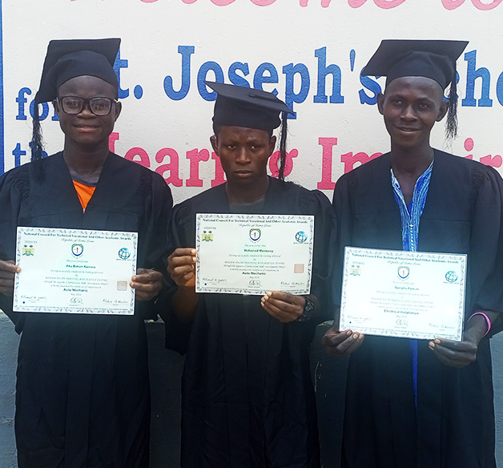

📍 Teko Road, Makeni • ✉️ stjosephshischool@gmail.com
DONATEVocational department
Less academic or older students follow a practical track. JS1–JS2 all try tailoring, carpentry, IT & agriculture; after JS2 many join vocational full-time. OICSL Makeni 2-year trade certificates in carpentry, masonry, tailoring.

Spacious sewing room, donated machines (Friends of St Joseph's, St Anselm's). Graduates receive their own machine to start a business.
Basic skills for girls & boys; benches & tables sold to other schools. OICSL certificates help gain paid work.
Garden Café (refurbished container via Irish Aid) run by ex-student Marian Harding, training girls. Guest-house housekeeping experience.
Regular IT + BECE agriculture & home economics. School farm (bought 1995) + animal husbandry.
Last cohort certified & now working; new group starting in Makeni salon soon.